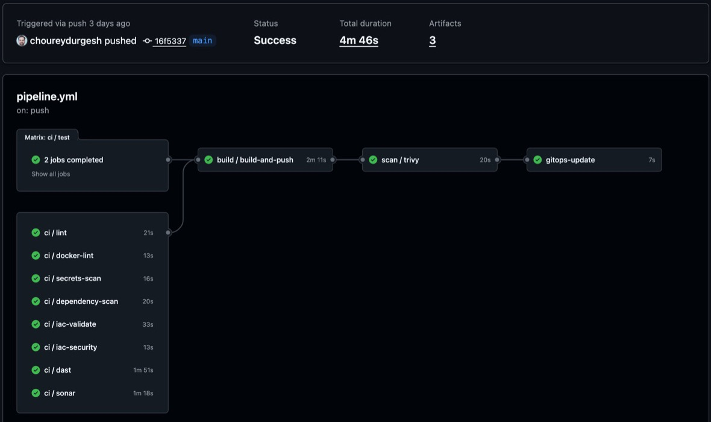
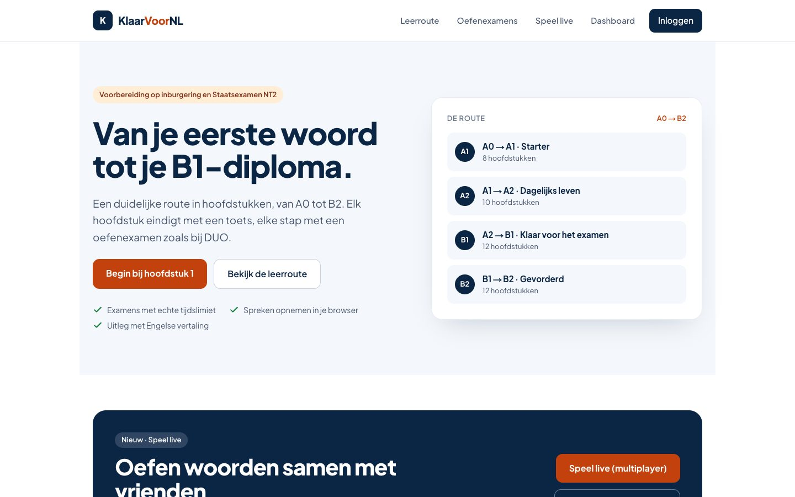

About
I'm a DevOps and platform engineer based in Helmond, near Eindhoven. I build delivery pipelines and platforms that are automated, secure and observable, from the first commit to production.
For more than ten years I built and tested Linux software for machines where failure is expensive: medical imaging at GE HealthCare, medical devices at Philips, hybrid locomotives at Alstom, milking robots at Lely and lithography test benches at ASML. Regulated work taught me to make every step traceable and repeatable.
I now bring that discipline to cloud infrastructure. To show it, I built BelastingBuddy and run it like a production platform: security gates on every pull request, GitOps delivery to Kubernetes, and metrics, logs and traces for everything that runs.
Experience
-
2026 — Now
Software Integration & Test Automation Engineer · ASML
via Brunel · Eindhoven
Building a software test framework that automates validation of lithography system test benches, and integrating and verifying software on Linux.
-
2026
DevOps & Platform Engineer, upskilling · Brunel
Eindhoven
Retrained in DevOps and platform engineering between client assignments and built BelastingBuddy as a production-style platform.
-
2025
Embedded Software Engineer · Canon Production Printing
via Brunel · Venlo
Real-time control loops up to 500 Hz in C++ for a high-speed printing platform, with structured logging and diagnostics that sped up troubleshooting.
-
2024 — 2025
Embedded Software Engineer · Philips
via Yacht · Eindhoven
Medical device firmware in a regulated SAFe environment. Maintained Azure DevOps CI/CD for automated builds and tests, and built RPC commands that automated hardware validation.
-
2022 — 2023
Embedded Software Engineer · Kverneland
via Yacht · Nieuw-Vennep
Engine-speed and cruise control over CAN/UDS for agricultural machinery, with TDD and automated tests in the delivery workflow.
-
2020 — 2022
Embedded Software Engineer · Alstom
via Dekimo
Set up Jenkins pipelines and build machines for cross-platform builds, migrated to the latest Gentoo Linux to close security gaps, and administered firewalls and system services.
-
2019 — 2020
Embedded Software Engineer · Lely
via Dekimo
Migrated the milking-robot OS from Debian 8 to 10, hardened the application to run with least privilege, and automated documentation with GitLab CI/CD.
-
2015 — 2019
Software Engineer · GE HealthCare
via Capgemini · Bengaluru
C++ middleware for medical imaging systems on Linux, from requirements (SRS/SDD) through unit testing, code review and root-cause analysis.
MTech and BE, Electrical, Electronics & Communications Engineering, Rajiv Gandhi Prodyogiki Vishwavidyalaya. English (fluent), Hindi (native), Dutch (beginner).
Projects
-

BelastingBuddy ↗
A Dutch tax-return guide for expats, run as a production-style platform. Every pull request passes ten security and quality gates (gitleaks, hadolint, SonarCloud, OWASP ZAP and more). Every merge is built for amd64 and arm64, scanned with Trivy and delivered to Kubernetes through Argo CD. Prometheus, Loki and Tempo cover metrics, logs and traces.
10 CI gates · merge to deploy < 5 min · 95.5% test coverage
-

KlaarVoorNL ↗
A Dutch learning platform from A0 to B2, with practice exams for the Inburgeringsexamen and Staatsexamen NT2. Exams are graded server-side so answer keys never reach the browser. It also has AI writing feedback through the Claude API, Supabase accounts, a real-time multiplayer quiz, and a Playwright test that sits every exam.
Contact
I'm looking for DevOps, Platform or DevSecOps roles in the Netherlands (hybrid) or remote within the EU. I'm a Dutch citizen, so no sponsorship is needed.